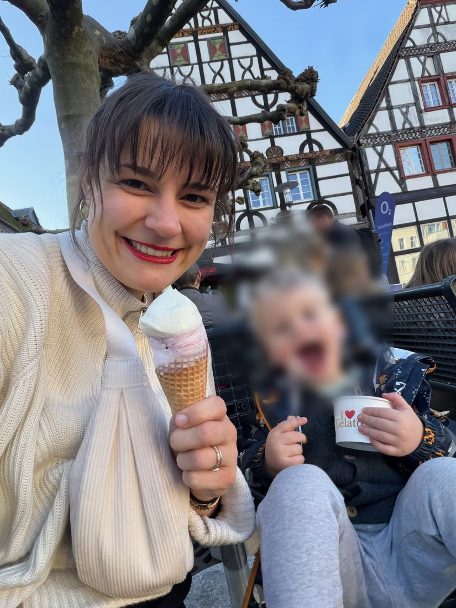
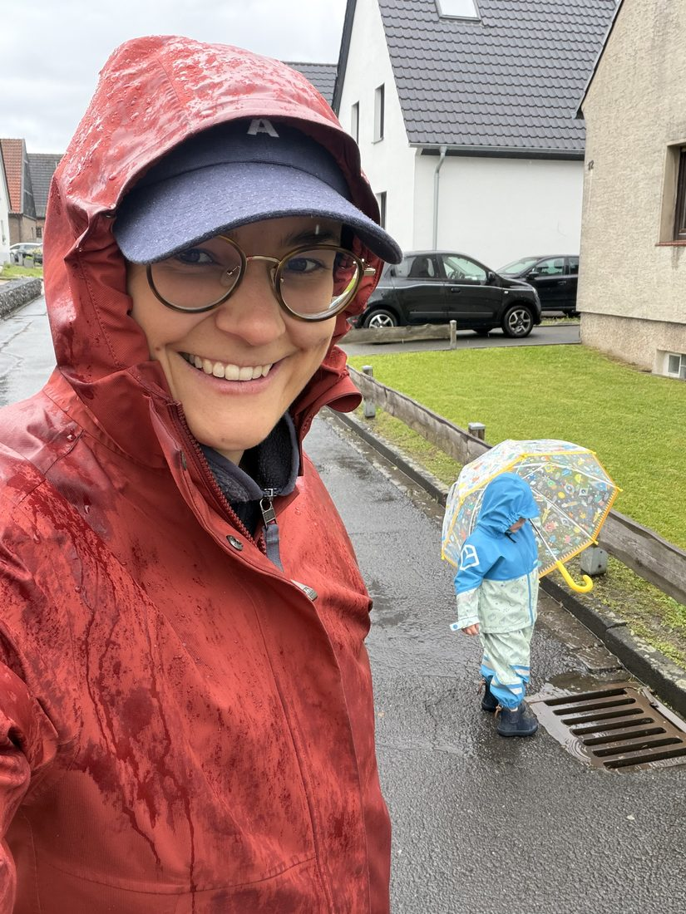
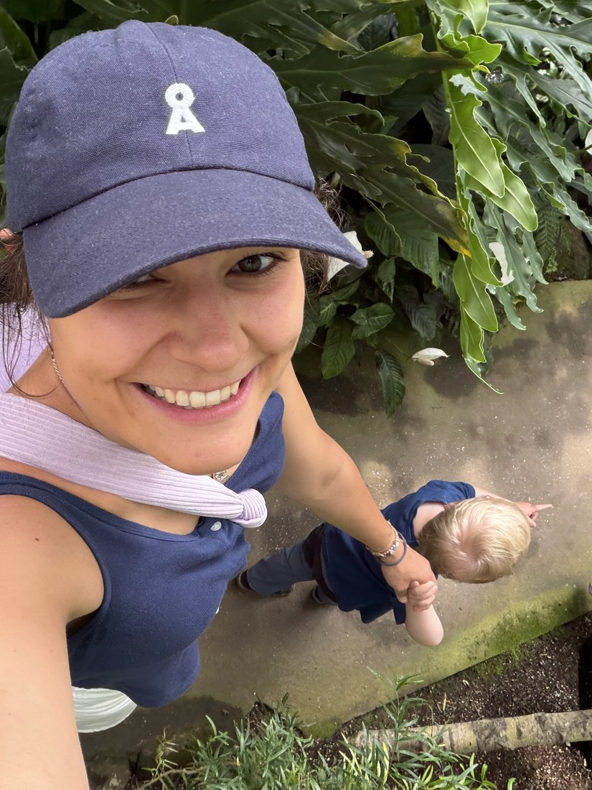
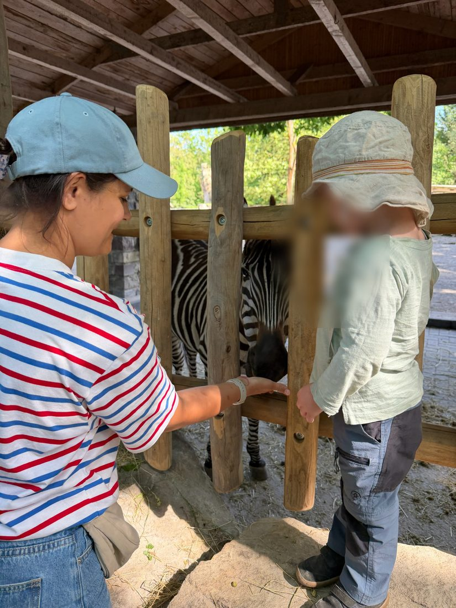

Finde Deine Bande.
Lerne Mütter in Deiner Stadt kennen, die sich für dieselben Dinge interessieren wie Du. Du bist nicht nur Mama, sondern auch Mensch. Findet Euch über das, was Euch ausmacht, nicht über das Alter Eurer Kinder.
Finde Deine MamasKostenlos · in 2 Minuten startklar · lokal in Deiner Stadt
Du bist umgeben von Müttern. Und trotzdem teilt ihr kaum gemeinsame Interessen.
Kurse, Spielgruppen, Klinik: Du triffst ständig andere Mütter, aber zusammengewürfelt nach Geburtstermin, nicht nach dem, was Dich ausmacht. Es geht um Schlafrhythmus, Beikost, Meilensteine. Selten um Dich als die Frau hinter der Mama. Damit bist Du nicht allein:
der Mütter fühlen sich nach der Geburt einsam. Kantar-Studie, 2025
In drei Schritten zu Deiner Bande.
Zeig, wer Du bist
Erstelle in zwei Minuten Dein Profil und erzähle, was Dich ausmacht.
Entdecke, wer in der Nähe ist
Lerne Mütter aus Deiner Stadt kennen, die wirklich zu Dir passen. Immer lokal, nie quer durch Deutschland.
Schreib und triff Dich
Ein fertiger erster Satz nimmt die Hürde. Ihr entscheidet: gemeinsam mit den Kleinen oder erst einmal allein.
Was wir anders machen.
Du stehst im Mittelpunkt, nicht das Kind
Ihr findet Euch über Interessen und Lebensgefühl, nicht über den ähnlichen Geburtstermin.
Wirklich lokal in Deiner Nähe
Jede Stadt ist ihr eigener Kreis. Du siehst nur Mütter aus Deiner Umgebung, mit denen ein Treffen unkompliziert machbar ist.
„Wer hat heute Zeit?"
Funk spontan an Deine Bande, dass Du gerade Zeit für einen Ausflug oder einen Kaffee hast. Nur an Deine Verbindungen, nie an Fremde.
Ein Ort, an dem Du sicher bist.
Verifizierte Profile, ein klarer Kodex, kein offener Marktplatz. Ein Mensch prüft jedes Profil und bestätigt die Echtheit. Du entscheidest, wann Du wen triffst.
Deine Bande wartet schon.
mamabande ist neu und wächst Stadt für Stadt. Wir starten im Kreis Unna. Sei eine der Ersten in Deiner Stadt, egal wo Du wohnst. Gemeinsam bauen wir auch Deine Bande auf.
Finde Deine Mamas



Warum mamabande.
Nach der Geburt meines Sohnes war ich ständig von Menschen umgeben und fühlte mich trotzdem einsam. Egal wo ich war, es ging viel ums Kind und wenig um mich als Frau hinter der Mama. Selbst in den organisierten Kursen fiel es mir schwer, mit anderen Müttern wirklich in tiefe Gespräche zu kommen.
Meine Freundinnen von früher wohnen weiter weg und sind nicht immer spontan verfügbar, weil ihr Alltag sich stark von meinem unterscheidet. Dabei ist die Zeit als Neu-Mama unglaublich prägend. Noch nie hatte ich so viel freie Zeit und war gleichzeitig so unflexibel. Am Ende saß ich oft allein zu Hause, weil mir die Kraft für Ausflüge allein gefehlt hat.
Ich habe mamabande gebaut, weil ich genau das gebraucht hätte: ein paar echte Freundinnen in der Nähe, die mich als Frau sehen, nicht nur als Mama. Die dasselbe erleben und Lust haben, spontan etwas zu unternehmen. Und ich bin sicher, dass es Dir vielleicht genauso geht.
Komm dazu. Deine Bande ist näher, als Du denkst.